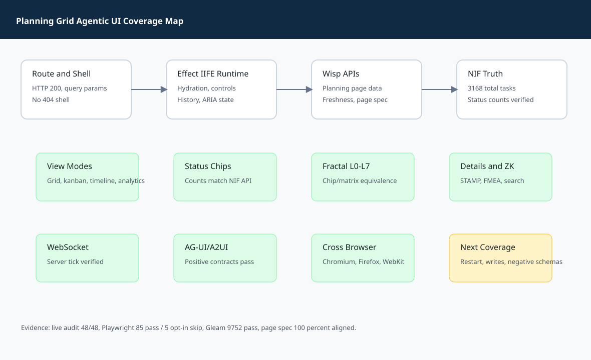
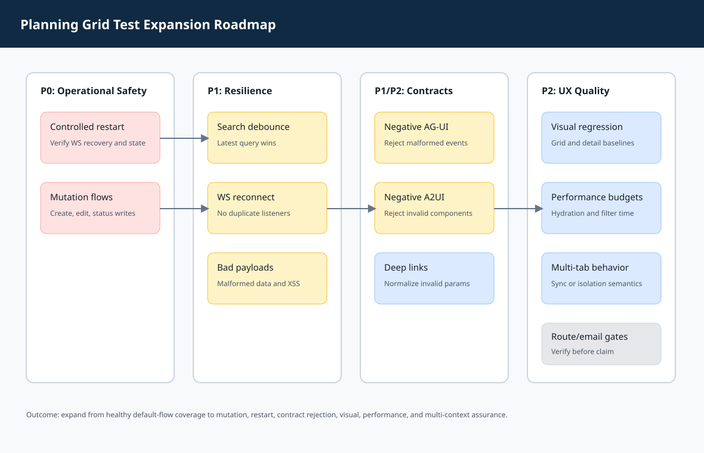

Bundle slug: 20260511-planning-grid-agentic-ui-full-coverage
Route status: verified over localhost, customer Tailscale, and internal HTTPS. Local static artifact validation passed.
| Command | Observed result |
|---|---|
./sa-plan add "Planning grid agentic UI audit journal" P2 | Created task 116554277441926495. |
./sa-plan update 116554277441926495 in_progress | Task moved to in_progress. |
Route rendering, runtime hydration, grid/kanban/timeline/analytics switching, NIF-backed status chip counts, L0-L7 fractal filtering, task detail actions, ZK search, WebSocket server tick, same-origin links, AG-UI/A2UI endpoints, responsive behavior, and WebKit execution.


| Area | Reason | Improvement |
|---|---|---|
| Restart/reconnect | Live backends churn. | No manual page refresh under daemon restart or socket drop. |
| Mutations | Read-only tests do not prove operational edits. | Task creation and status changes become verified workflows. |
| Malformed data | Unsafe data can break or compromise rendering. | Safer detail panels and search results. |
| Visual/performance | Selector tests miss scanability and latency drift. | Faster, more stable command-center UI. |